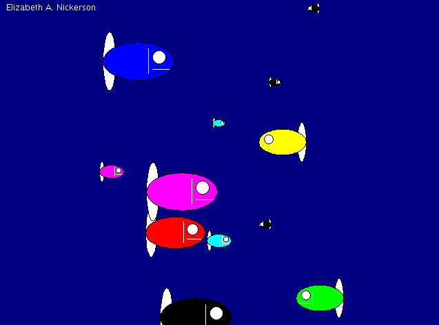

Python
Fish Screensaver
As lab for my introduction to programming course, I wrote a basic screensaver program in Python. For this course, we were required to develop code in JES , a development environment for students that uses a version of Python, implemented in Java. This program uses a few functions that come built-in to JES, so keep in mind that the attached code may not run properly in another environment.
Running the code causes a pop-up window to appear, in which the user specifies the number of fish they'd like the screensaver to show. The program then generates the requested number of fish, randomly assigns them a size and color, and animates them so they appear to swim. The result looks something like this:
